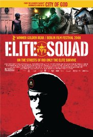

Fredrik
This is just a blindtext that doesnt make any sense at all.
Favorite Movies

|
Lost in TranslationA faded movie star and a neglected young woman form an unlikely bond after crossing paths in Tokyo. |
SevenTwo detectives, a rookie and a veteran, hunt a serial killer who uses the seven deadly sins as his modus operandi. |
|
|  | Tropa de EliteWatch Trailer1997, Captain Nascimento has to find a substitute for his occupation while trying to take down drug dealers and criminals before the Pope comes to Rio de Janeiro, Brazil. |